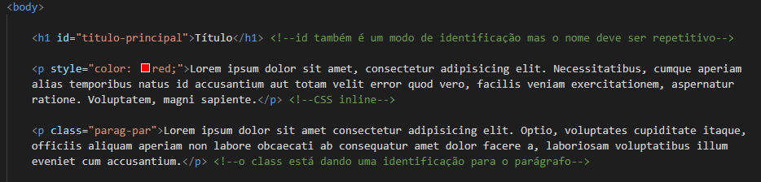
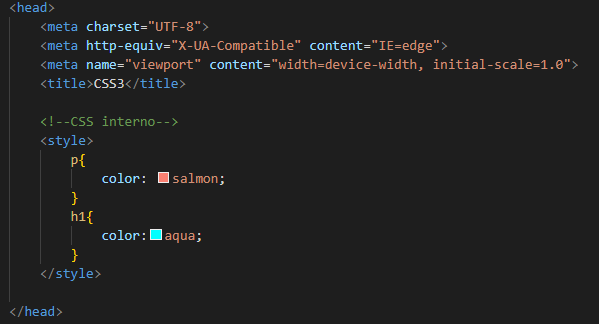
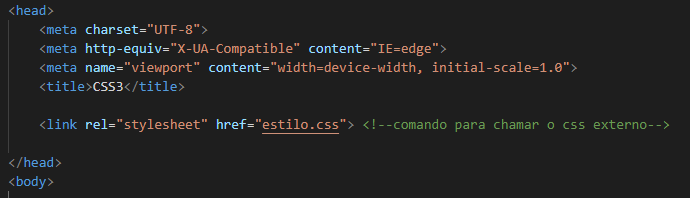
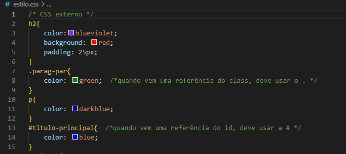

Aula 3
Objetivo: nesta aula daremos uma introdução ao CSS e e suas aplicações.

O que é o CSS?
CSS é a sigla para o termo em inglês Cascading Style Sheets que, traduzido para o português, significa Folha de Estilo em Cascatas. O CSS é fácil de aprender e entender e é facilmente utilizado com as linguagens de marcação HTML ou XHTML.
É possível criar dentro das tags uma classe ou id podendo nomeá-los da maneira que quiser, isso facilita para definir um estilo para um pedaço específico da sua página. Para chamá-los no CSS basta usar um ".nome" quando for classe e "#nome" quando foi id.
Existem três formas de utilizar o CSS: inline, interno e externo. São elas:
Inline: o estillo do conteúdo(o style) é descrito dentro da tag ou comando que se deseja moodificar.

Interno: é criado uma tag style dentro do head definindo o estilo/design que se deseja para aquela tag, classe ou id.

externo: É criado um arquivo .CSS e nele ficará todo o style do conteúdo, assim não é necessário adicionar vários códigos no seu html, deixando ele mais claro. É necessário chamar o arquivo CSS no html para herdar o estilo descrit, conforme mostrado na imagem abaixo.


Dentro do style são definidos os atributos do CSS, os quais fornecerão o design/estilo da página, como cor, tamanho, fonte, fundo e etc. É possível ver uma lista de atributos do CSS neste link.
Uma dica é criar uma div, ela pega uma "divisão/pedaço" da sua página, assim é possivel criar um design específico para somente tudo que está dentro dela. Assim, basta utilizar uma das formas de CSS desejadas.
No site W3Schols há diversos exemplos de códigos explicações que podem ampliar e aprofundar seu conhecimento.
No site Pexels há diversas imagens liberadas para que vcê possa usar na sua página!
Chegamos ao fim da terceira aula do curso e segunda aula de tech, foram muitas informações mas calma que no fim tudo fará sentido. O segredo é praticar.
Bons estudos!